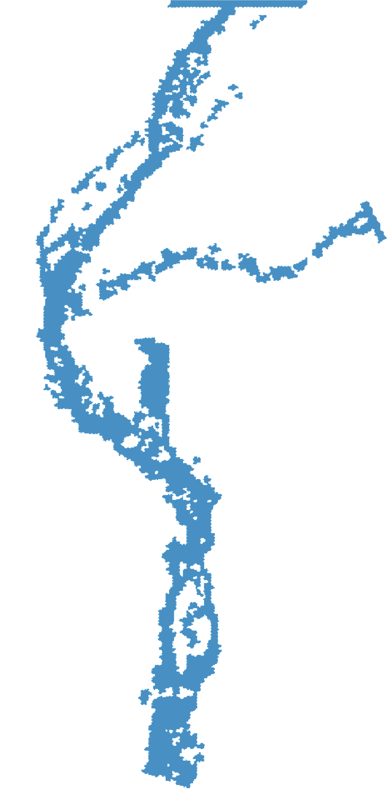
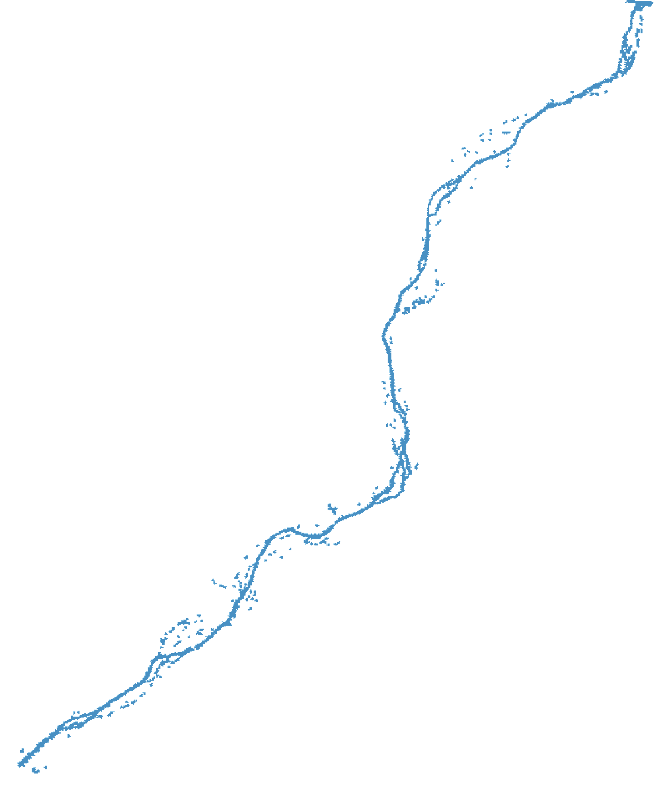
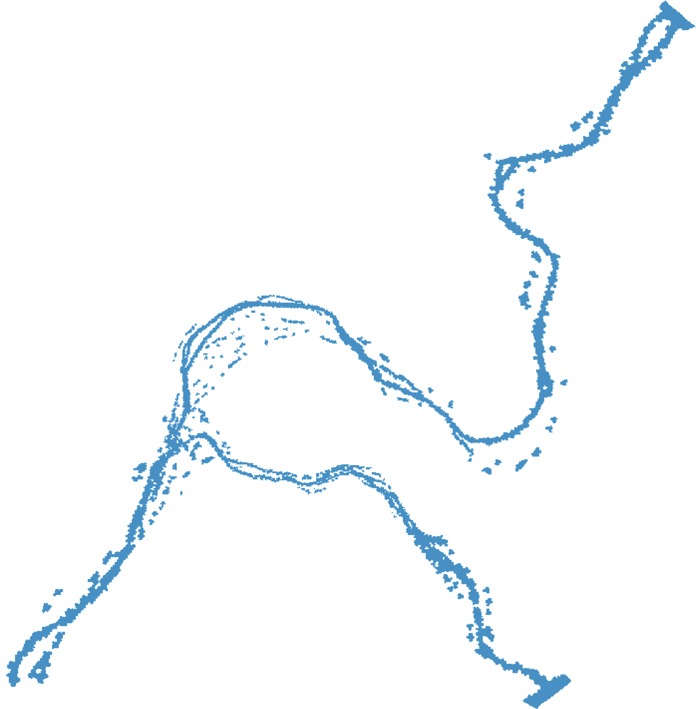

Real Terrain → Extract 20m DTM Analysis Layer
RADAR ECHO / GRID MODE
Accumulated Rainfall
48hr 累積雨量
警戒基準 500 mm
D-2
D-1
NOW
570 mm
48 小時累積曲線推進時，同步將雨量映射到全息地形上。
Red Warning / DF055
DF055
土石流紅色警戒
累積雨量達警戒基準，進入物理模擬參考模式。
20m DEM SANDBOX
DF055
Physical Simulation
DF055 / 高市DF047
DF055 立體地形模擬
three-embed
高市DF047 物理場景影片
mp4
Observation Camera
高樹大津橋｜水利署水情影像
Observation Camera
寶來一號橋｜水利署水情影像
Observation Camera
台20線 78K+200｜即時影像
Observation Camera
台20線 82K+850｜即時影像
Flood Data
01 / 24

fx 復興｜wbchen 水資料
Flood Data
01 / 24

qhrwl 上游｜wbchen 水資料
Flood Data
01 / 24

blrwl 寶山｜wbchen 水資料
LAONONG / DIGITAL TWIN BOOT
Preparing Sandbox
Google Hybrid Terrain
LINKED
Dark Terrain Interface
LOADING
ArcGIS Elevation3D
READY
20m DTM Sandbox
STANDBY
LAONONG / PHYSICAL DIGITAL TWIN
全息沙盤測試_V5